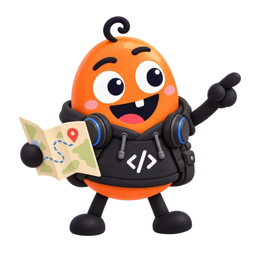

내 자료
문서 · 메모 · 링크

N2 · Google NotebookLM 활용 수업
읽고, 묻고, 보고, 듣다.
내 자료 → 질문 → 쓸 수 있는 결과

N2 · 오늘 기억할 흐름
문서 · 메모 · 링크
질문 + 출처 확인
그림 · 오디오 · 퀴즈
오늘의 목표: 자료 하나로, 결과 하나 만들기

N2 · 화면 익히기
① 소스 — 답의 바탕이 될 자료를 선택하는 곳
N2 · 자료 활용
접속·로그인은 사전 준비. 오늘은 TXT 두 개로 시작합니다.

N2 · 여행 일정
N2 · 자료 활용
선택한 원문에서만
일정을 구성
인원·날씨·예산을
함께 고려
시각·장소·2인 비용
원문 근거 표시
모르는 정보는 추측하지 말고 자료에 없다고 표시해 달라고 하세요.
N2 · 결과 예시
가상 자료로 작성한 기대 결과 · 이동은 도보 각 10분 · 도보 구간은 우산 필요

N2 · 답을 믿기 전에
전시관 입장료는
성인 2명 16,000원입니다.
인용한 자료와
계산을 확인해요.
성인 입장료는
1인 8,000원이다.
학습용 인용 모형 · 실제 인용 표시는 생성 결과에 따라 달라져요.

N2 · 따라 해보기
여행 TXT 2개
새 노트북에
일정 3개 요청
가격과 총액
준비된 질문은 복사해 쓰세요. 생성 대기 시간은 별도로 걸릴 수 있어요.
N2 · 실습 완료 확인
확인한 항목을 눌러 보세요. 0 / 3

N2 · 자료 비교
마을회관 2층
확정 전 후보마을회관 3층
이 공지를 우선가상 자료 비교 · 우선할 자료와 미정 항목을 분명하게 알려 주세요.
N2 · 수업이 끝난 뒤에도
ZIP 안의 practice.html은 내려받은 뒤에도 열 수 있어요.
실제 NotebookLM 실습에는 Google 계정과 인터넷이 필요해요.
웹 자료: https://dkdlqoddi.github.io/slides/notebooklm-examples/